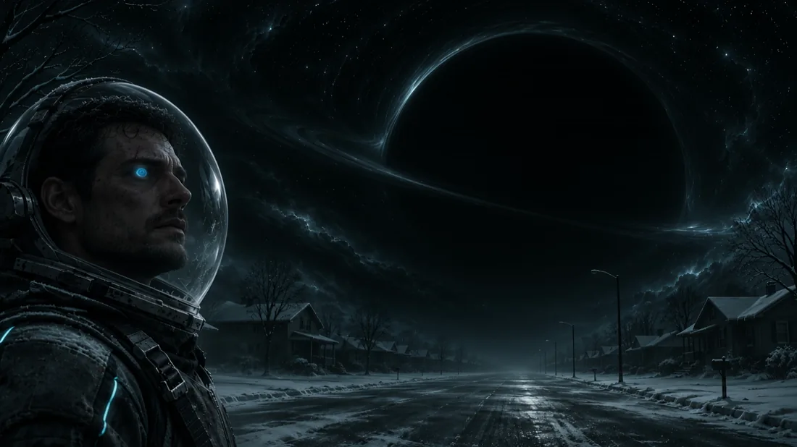

A field guide to cinematic production
Sound into
Picture.
Follow HARROW’s Above & Beyond from a 71 BPM ballad to a dance film set beneath an eclipse.
THE PRODUCTION MANUAL
Browse all chaptersInside the process.


IN THE PROMPT LAB
A shot you can direct.
Specify the opening state, give the actor a trigger, move the camera with purpose, and land on the frame the next shot needs.
Build a shot promptBEHIND THE PRODUCTION